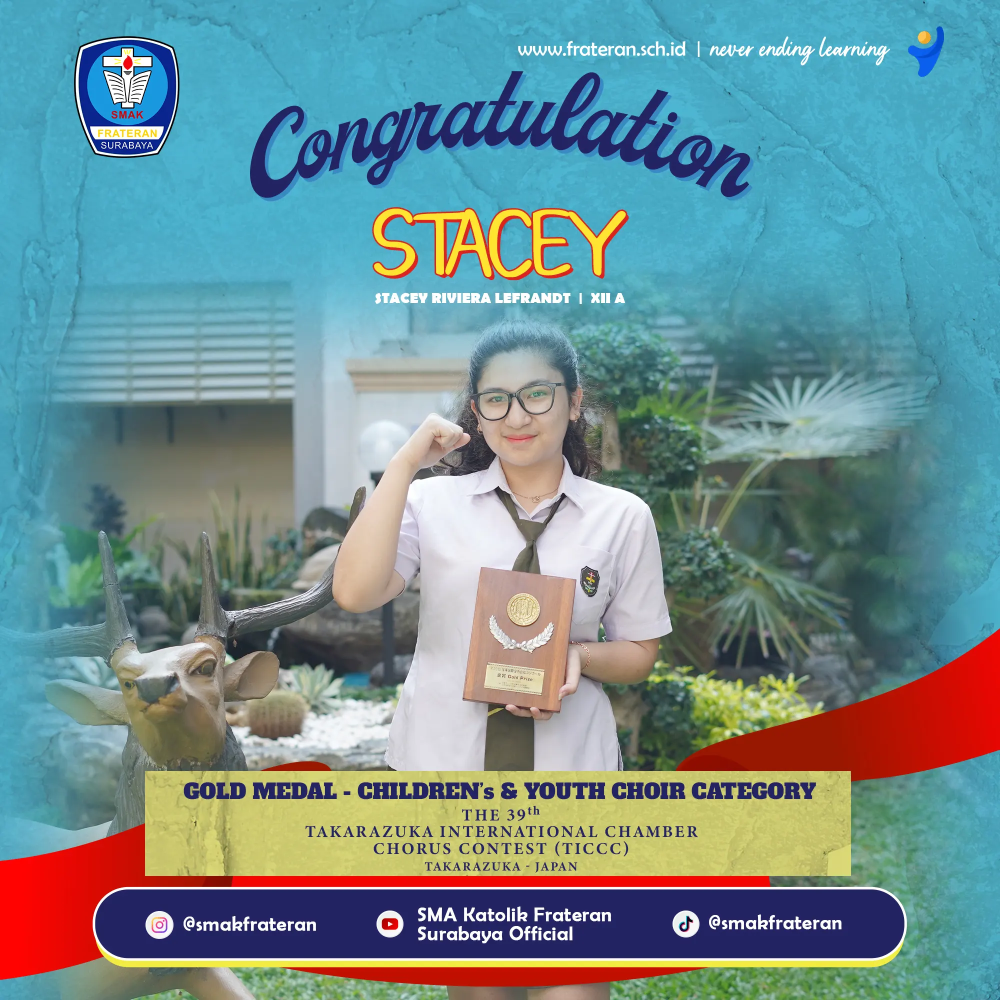
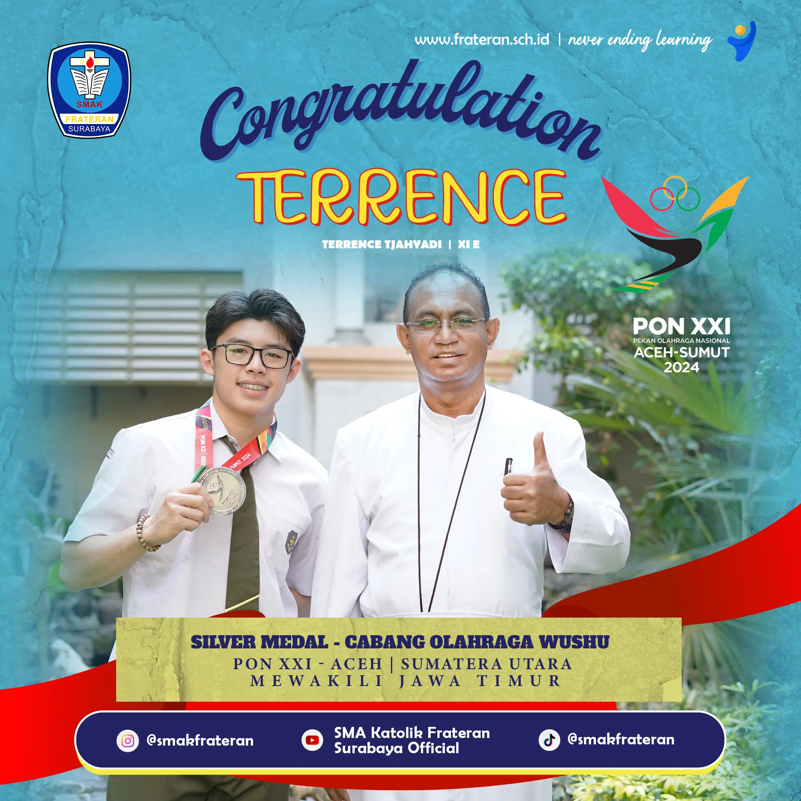
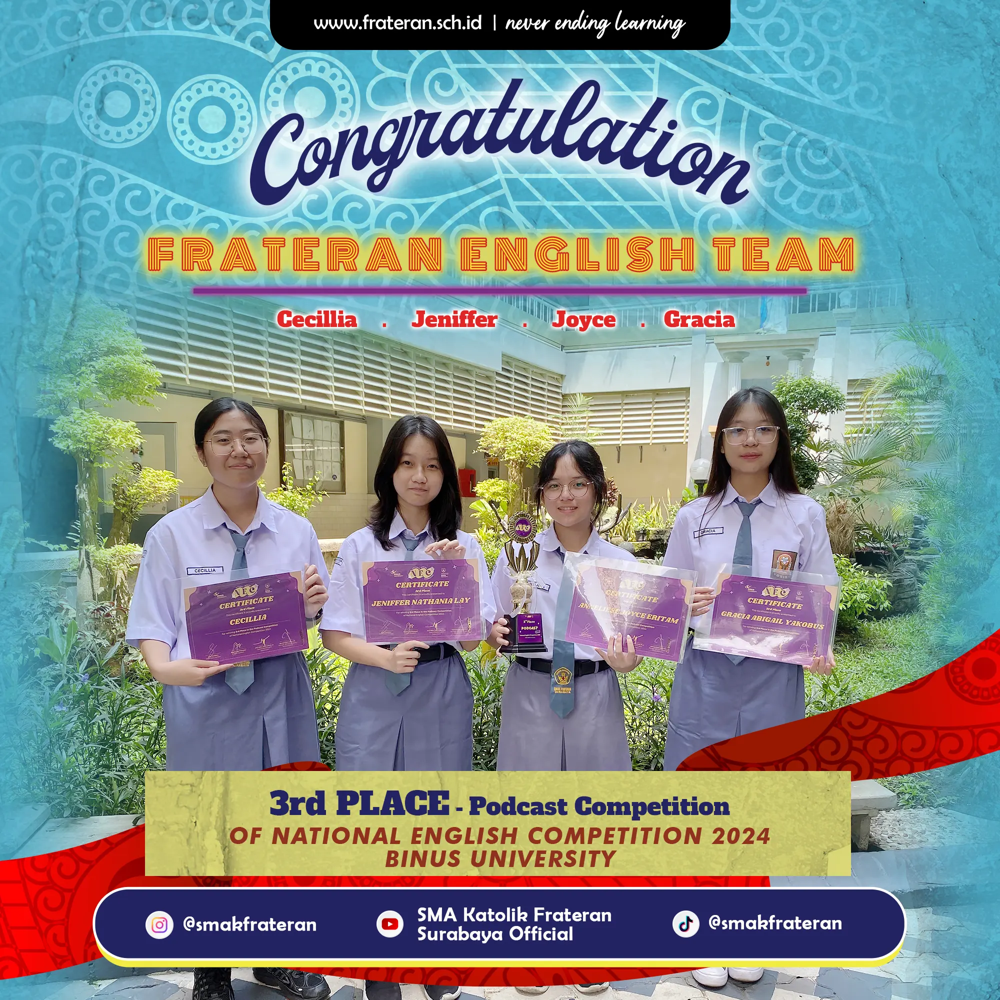
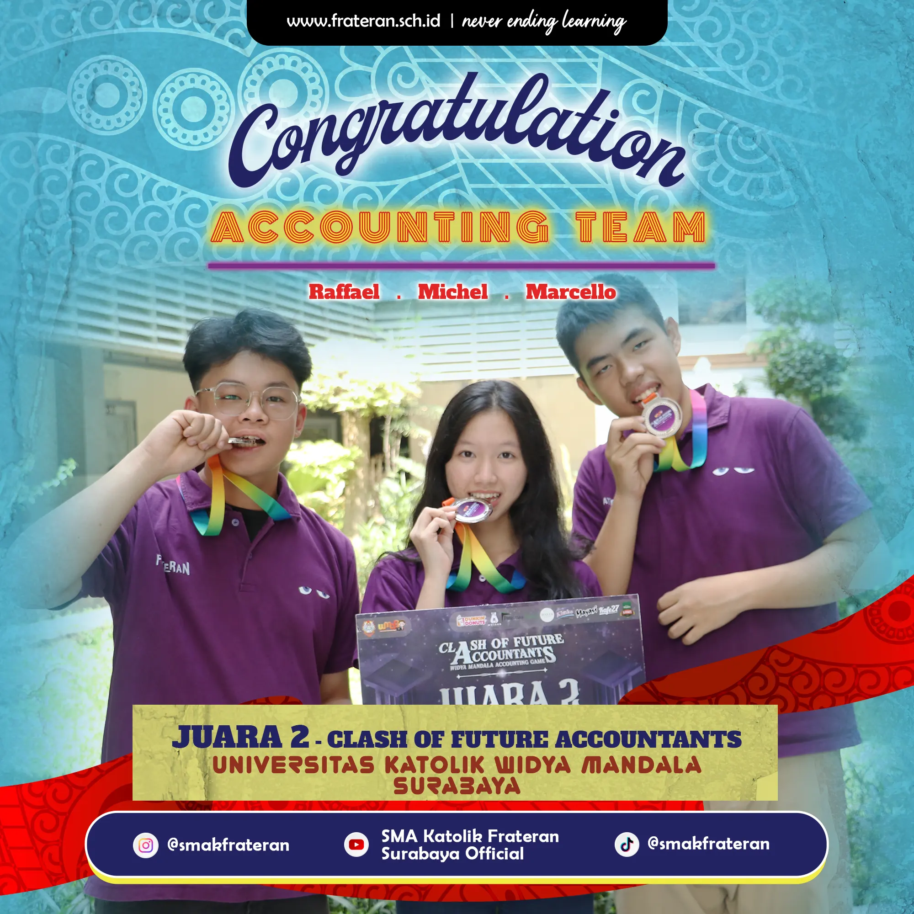
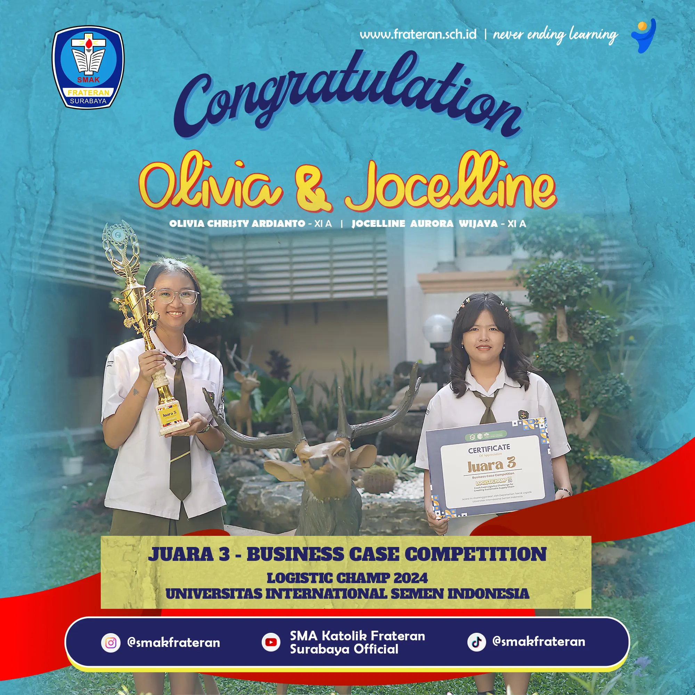
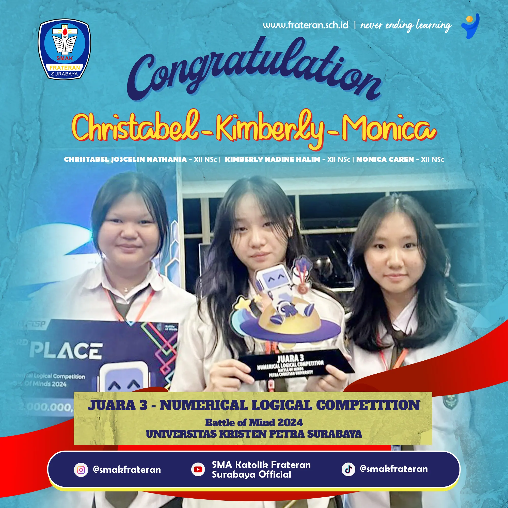

Kegiatan Sekolah
Video berikut diambil dari kanal YouTube resmi SMA Katolik Frateran Surabaya.
MPLS
Masa Pengenalan Lingkungan Sekolah bagi siswa baru.
Outdoor Study
Kelas IPA dan IPS di PPLH Seloliman, Januari - Februari 2019.
Live In
Live In SMA Katolik Frateran Surabaya 2024 bertema "Everyone is Unique".
Study Tour
Study tour ke Bali pada tahun 2019.
Graduation
Graduation Ceremony SMA Katolik Frateran Surabaya 2022.
Kegiatan Lainnya
Website resmi juga mencantumkan Frateran Cup dan OSIS sebagai kegiatan sekolah.
Prestasi Siswa






Sumber: poster prestasi pada website resmi frateran.sch.id.